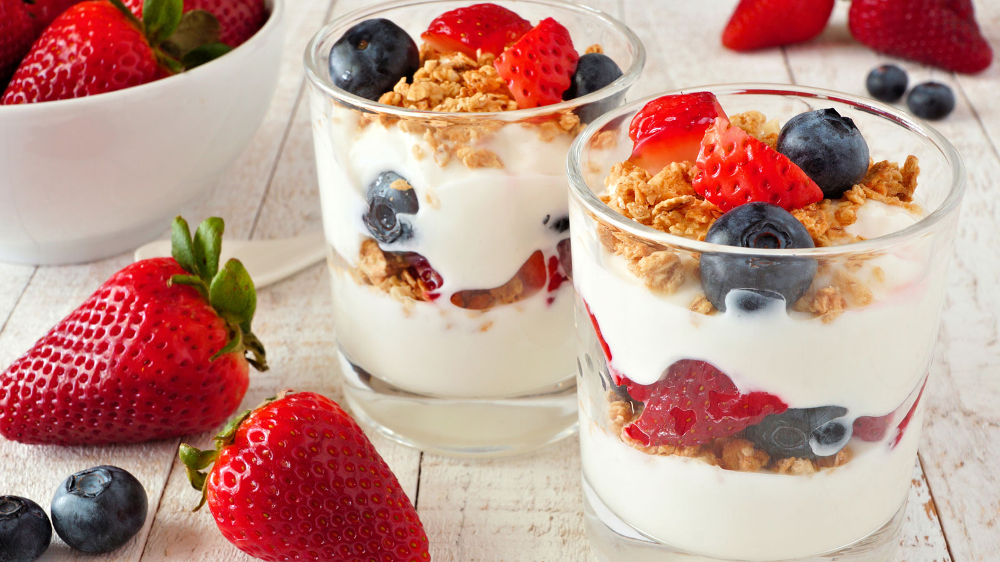

Peanut Chickpea Protein Bowl
High-protein bowl with roasted chickpeas, veggies, and creamy peanut dressing.
Cal
390
Protein
22g
Carbs
38g
Fat
16g

Mediterranean Salmon Salad
Omega-3 rich salmon with fresh greens and Mediterranean flavors.
Cal
280
Protein
25g
Carbs
8g
Fat
18g

Vegetarian Buddha Bowl
Plant-based protein bowl with chickpeas, sweet potato, and tahini dressing.
Cal
350
Protein
15g
Carbs
45g
Fat
12g

Keto Beef Stir-Fry
Low-carb, high-protein beef stir-fry with plenty of vegetables.
Cal
320
Protein
35g
Carbs
12g
Fat
14g

Turkey & Avocado Wrap
Balanced lunch wrap with lean turkey, avocado, and fresh vegetables.
Cal
380
Protein
32g
Carbs
42g
Fat
12g

Greek Yogurt Parfait
High-protein breakfast with Greek yogurt, berries, and granola.
Cal
280
Protein
24g
Carbs
36g
Fat
8g